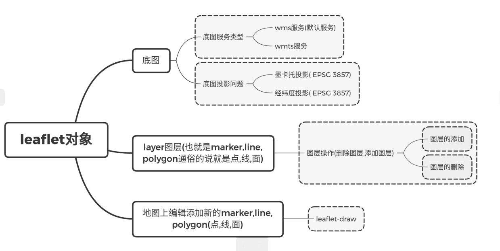

好多前端程序员开始使用leaflet开发webGis项目也就是为了满足项目需求,因为只靠第三方的地图服务基本上满足不了项目需求.接下来我给大家介绍一下自己的半年的从参与项目的过程中获取的干货. 我从使用leaflet开发应用要把leaflet跟react结合开发的应用.所以我讲的一些东西也就是把leaflet跟react结合为重点.
leaflet目录

底图
底图服务类型
本人所参与的项目都是政府项目,所以第三方底图服务都使用天地图,大家同样可以去申请使用.
- wms服务(默认服务)
leaflet 默认支持wms格式的地图服务,简单使用方法react-leaflet官网上就有相应的实例. react-leaflet wmts 实例
<Map crs={L.CRS.EPSG3857} classname="地图" center={this.state.center} zoom={this.state.zoom}>
<WMSTileLayer
url="http://xxxx/img_c/wmts"
/>
</Map> - wmts服务
其实使用wmts格式地图服务的调用也是跟wms格式地图调用方法一样简单,但是实现过程中我失败了,官网的方法没能用.解决这个问题我就开始深入的研究leaflet这个框架了.废话说到这里,开始解决问题吧.
折腾了一段时间发现,这个不是自己配置错误的问题,而是我是用的是天地图的wmts格式的服务,国内的地图标准好像跟国外的地图服务标准在某些细节上参数转化不太一样,所以出现了我n次配置,一次都没能成功调用的情况.本来我很想解剖源代码给你们解释来着,但是我觉得没必要你们就看我的实例自己懂就可以,不懂得自己找我解决问题.这里我就填一个github实例.
<Map crs={L.CRS.EPSG3857} classname="地图" center={this.state.center} zoom={this.state.zoom}> |
底图投影问题
- 墨卡托投影( EPSG 3857)
L.CRS.EPSG3857 参数来设置
<Map crs={L.CRS.EPSG3857} classname="地图" center={this.state.center} zoom={this.state.zoom}>
//react各种地图组件
</Map> - 经纬度投影( EPSG 3857)
L.CRS.EPSG4326 参数来设置
<Map crs={L.CRS.EPSG4326} classname="地图" center={this.state.center} zoom={this.state.zoom}>
//react各种地图组件
</Map>layer图层(也就是marker,line,polygon通俗的说就是点,线,面)
图层操作(删除图层,添加图层)
- 图层的添加
- 图层的删除